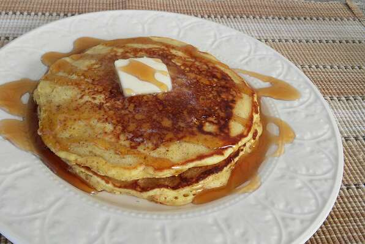

Hotcakes

Description
Our favourite hotcakes made with buttermilk and wheat germ.
- Prep: 10 mins
- Cool: 4 mins
- Total: mins
- Servings: 20
- Yield: 40 hotcakes
Per Serving: 153 calories; protein 6.1g; carbohydrates 21.9g; fat 4.5g; cholesterol 54.6mg; sodium 328.2mg.
Ingredients
- 3½ cups all-purpose flour
- 2 tablespoons white sugar
- 2 teaspoons baking soda
- 1 teaspoon salt
- 1 quart buttermilk
- 5 eggs
- ¼ cup butter, melted
- ½ cup wheat germ
Directions
- Mix flour, sugar, baking soda and salt together in a large bowl. Mix in buttermilk, eggs and melted butter. Stir wheat germ into batter last.
- Heat a lightly buttered griddle over medium-high heat. Drop batter by larger spoonfuls onto the griddle and cook until bubbles form and the edges are dry, 2 to 3 minutes. Flip and cook until browned on the other side, 2 to 3 minutes more. Repeat with remaining batter.
Other Recipes